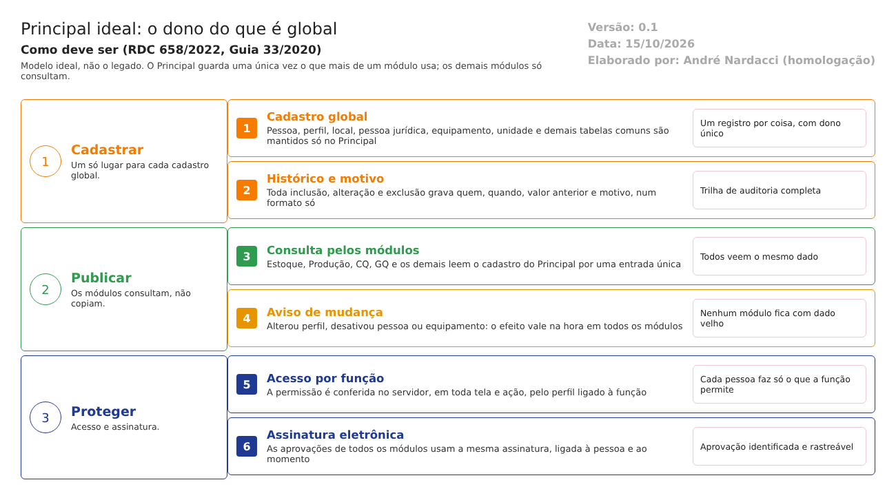

O ideal. Como o Principal deve trabalhar para atender à RDC 658/2022 e ao Guia 33/2020. Este documento não descreve o legado. Usa o que foi levantado no código só para mostrar o que manter, o que corrigir e o que construir. Complementa modelo-ideal/01-qualidade-entre-modulos.md e a análise de telas e tabelas repetidas (transversal/01-telas-repetidas.md). Versão 0.1, de 15/10/2026, para validação: nada aqui vem da reunião de 13/10 (ainda não validada); tudo vem do código e das normas.
1. O papel do Principal no ERP
O Principal é dono de tudo o que é global: o que mais de um módulo usa. Cada informação global existe uma só vez, com um só caminho de alteração e um só histórico. Os outros módulos consultam; não copiam, não alteram por outro caminho.
No legado, o Estoque tem cópias das telas de Profissional, Conta usuário, Perfil, Grupo de usuários, Funções profissionais, Local e Pessoa jurídica, que mudaram separadamente. A mesma informação pode ser alterada por dois caminhos, com regras e histórico diferentes (transversal/01-telas-repetidas.md, seção 1). Tabelas com o mesmo nome repetem-se em três módulos (unidade de medida, equipamento, configuração, anexo, histórico).
| O Principal faz | O Principal não faz |
|---|---|
| Mantém pessoas, perfis, grupos, funções, áreas e locais | Decide a situação do lote (é do Estoque, CQ e GQ) |
| Mantém pessoas jurídicas (fornecedor, cliente, fabricante) e equipamentos | Qualifica fornecedor (é da GQ; o Principal só guarda o cadastro) |
| Mantém as tabelas de apoio comuns (unidade de medida, forma, embalagem) | Guarda o cadastro de item e os controles de lote e validade (a validar, ponto 1 da seção 8) |
| Guarda o histórico de alterações, num formato só | Registra o trabalho do dia a dia dos outros módulos |
| Confere a permissão e a assinatura eletrônica de todos |
2. Como uma informação global anda

Regras do caminho: - Dono único: cada cadastro global só muda no Principal. - Consulta, não cópia: o módulo que precisa do dado o lê na hora; não guarda uma segunda versão. - Nada some: excluir é só marcar; o histórico guarda quem, quando, o valor anterior e o motivo. - Efeito imediato: perfil mudado ou pessoa desativada valem em todos os módulos na mesma hora.
3. As telas e tabelas globais
Ação: Manter = o legado já faz como deve; Corrigir = existe, mas não atende; Construir = não existe.
| # | Função | Referência | Ação | Como deve funcionar | No legado hoje |
|---|---|---|---|---|---|
| 1 | Cadastros globais com dono único | Guia 33, 9.3.2.3 | Corrigir | Pessoa, perfil, grupo, função, local e pessoa jurídica só no Principal. Os outros módulos consultam por uma entrada única | Telas copiadas no Estoque (Profissional, Conta usuário, Perfil, Grupo, Funções profissionais, Local, Pessoa jurídica) com regras e histórico diferentes |
| 2 | Acesso por função | Guia 33, 9.3.2.3 e 9.7.7.1.2 | Corrigir | Permissão conferida no servidor, em toda tela e ação. O perfil liga a função (analista, gestor, Pessoa Delegada, inspetor) ao que ela pode fazer, igual em todos os módulos | Perfis por função existem; a GQ tem uma segunda camada (Grupo Perfil); o Estoque tem o seu próprio cadastro de perfil |
| 3 | Trilha de auditoria num formato só | RDC 658, art. 125 | Corrigir | Toda inclusão, alteração e exclusão grava quem, quando, valor anterior e motivo, com data e hora do servidor, numa biblioteca comum | Dois formatos (TBL_LOG_ALTERACAO igual no Principal, Produção e Estoque; diferente na GQ e no Controle de Documentos); perfil do Estoque sem histórico |
| 4 | Registro no momento da ação | RDC 658, art. 124 | Corrigir | Data e hora do servidor, nunca digitadas | A confirmar nos testes |
| 5 | Assinatura eletrônica | Guia 33, 9.3.2.3 e 9.7.7.1.2 | Construir | Uma assinatura (pessoa, data, hora, significado) usada por toda aprovação, em todos os módulos | Não existe; hoje separa quem cadastra de quem autoriza, sem assinatura |
| 6 | Integrações confiáveis | Guia 33, 9.3.2.3 | Corrigir | Entrada única de consulta, que avisa quando falha. Nenhuma tela mostra sucesso sem ter feito a ação | Consulta por API, sinônimo de banco ou cópia, conforme o módulo |
| 7 | Equipamentos, ambientes e instrumentos | Art. 148, I e II | Corrigir | Um cadastro só; calibração e qualificação em cima dele (dono a decidir com a área) | TBL_EQUIPAMENTO em três módulos (Principal, Estoque, Rastreabilidade), com estruturas diferentes |
| 8 | Unidade de medida e tabelas de apoio comuns | — | Corrigir | Uma tabela por assunto: unidade de medida, forma farmacêutica, acondicionamento, embalagem, DCB, tipo de função | Unidade de medida em três tabelas (TBL_UNIDADE_MEDIDA Estoque e CQ, TBL_MEDIDA Produção); Acondicionamento, DCB, Embalagem e Tipo DCB idênticos na Produção e no Estoque |
| 9 | Configuração do sistema | — | Corrigir | Parâmetros comuns no Principal; cada módulo guarda só os seus | SIS_CONFIGURACAO com o mesmo nome em Produção, Principal e Estoque, com colunas diferentes |
| 10 | Anexos e notificações | — | Corrigir | Biblioteca comum de anexos e de aviso ao usuário | TBL_ANEXO guardado de jeito diferente em Produção, GQ, Controle de Documentos e Comercial |
| 11 | Entrada, menu e permissões | — | Corrigir | Biblioteca comum para os módulos | Entrada igual repetida entre módulos MVC; cada módulo monta o seu menu |
4. Quem usa o que do Principal
| Módulo | Consulta do Principal |
|---|---|
| Estoque | Pessoas, perfis, locais, pessoas jurídicas (fornecedor e cliente), equipamentos, unidade de medida |
| Produção | Pessoas e perfis, equipamentos, locais, unidade de medida, tabelas de apoio |
| Controle da Qualidade | Pessoas e perfis, equipamentos, locais, unidade de medida |
| Garantia da Qualidade | Pessoas, perfis e áreas (já consulta pela API, sem copiar), pessoas jurídicas |
| Controle de Documentos | Pessoas e áreas (quem elabora, revisa, aprova e é treinado) |
| Comercial | Pessoas jurídicas (cliente), locais |
| Rastreabilidade | Equipamentos, pessoas jurídicas |
| OPE | Pessoas e perfis |
Origem: transversal/01-telas-repetidas.md e transversal/04-mapa-de-integracoes.md. As linhas de Controle da Qualidade, Comercial, Rastreabilidade e OPE são inferência a confirmar.
5. Quem faz o quê no Principal
| Função | Pode | Não pode |
|---|---|---|
| Administrador do sistema | Criar pessoas, perfis, grupos e funções; ativar e desativar | Aprovar o que é de outro módulo |
| Responsável pelo cadastro | Manter pessoa jurídica, local, equipamento e tabelas de apoio | Apagar registro em uso (só desativar) |
| Gestor da área | Pedir a mudança de perfil de quem é da sua área | Alterar o próprio perfil |
| Qualquer usuário | Consultar o que o seu perfil permite; trocar a própria senha | Alterar cadastro global |
A função é conferida no servidor, em toda gravação. Quem cria a pessoa não define o próprio acesso.
6. O que manter do legado
O que o código mostra que já está como deve (a confirmar nos testes):
- Bloqueio da conta após tentativas erradas.
- Validade da senha e da conta.
- Perfis por função, ligados a cada tela.
- Exclusão lógica: nada é apagado.
- Histórico campo a campo na maior parte dos cadastros do Principal.
- A GQ consulta pessoas e perfis pela API em vez de copiar; é o modelo a seguir.
7. Como migrar do que existe
- Escolher o registro de referência quando há duas versões (por exemplo, a mesma pessoa jurídica no Principal e no Estoque).
- Ligar os módulos ao Principal por consulta.
- Retirar as telas copiadas, depois de confirmar que ninguém as usa.
- Unir as tabelas repetidas, depois de confirmar com o DBA se são duas tabelas ou uma só lida pelos dois bancos.
8. Pontos para validar
- O cadastro de item (e os controles de lote e validade) fica no Principal ou no Estoque? O levantamento transversal sugere o Estoque; a validar com a área.
- Quem é o dono de calibração e qualificação de equipamentos: Produção, GQ ou o próprio cadastro de equipamentos?
- As tabelas idênticas da Produção e do Estoque (acondicionamento, DCB, embalagem, tipo DCB) são duas tabelas ou uma só? (DBA)
- Existe conversão entre unidades de medida na prática? Se existir, ela é por item?
- Quantos registros duplicados existem hoje (pessoa jurídica, local, equipamento) e quem decide o que vale?
- Qual instrução normativa de sistemas computadorizados vale (IN 134/2022, a confirmar)? Ela não está na pasta
Documentação/.
O que a ANVISA pede: textos citados
Texto literal das normas citadas em cada tema, extraído dos arquivos da pasta Documentação/ (RDC nº 658/2022 em português e Guia nº 33/2020) por homologacao/ferramentas/citar_normas_diagnostico.py. "(...)" marca trechos omitidos. No portal, clique na referência de cada tema para ver o texto.
Tema 1 · Cadastros globais com dono único
Guia nº 33/2020, item 9.3.2.3 (Requisitos Operacionais)
Dados – requisitos relacionados ao manuseio de dados, considerando-se o seu impacto na segurança do paciente, na qualidade do produto e na integridade dos dados, abrangendo os seguintes pontos: - Definição dos registros eletrônicos; - Definição dos tipos de dados, incluindo a identificação das características, formatação, parâmetros críticos, intervalo e formato de datas válidos, limites e exatidão e assim por diante; - Onde e como os dados serão gravados (ex.: bancos de dados relacionais, arquivos criptografados etc.) - Campos necessários; - Migração de dados (importação e exportação); - Entrada de dados e subsequente edição; - Backup e recuperação; - Requisitos para arquivamento; - Segurança dos dados e integridade.
Interfaces – devem ser definidas (se aplicável), abrangendo os seguintes pontos: - Interface(s) com o usuário – definidas em termos de níveis de acesso (operador, administrador, gerente do sistema) ou funções quando apropriado; - Interface(s) com outros sistemas; - Interface(s) com equipamentos, tais como sensores ou atuadores. Isto pode incluir listas de I/O (entrada e saída) para sistemas utilizados para controle de processos; - Forma de entrada e saída de dados pelos usuários (ex.: teclado, leitor de código de barras, impressoras etc.).
Tema 2 · Acesso por função
Guia nº 33/2020, item 9.3.2.3 (Requisitos Operacionais)
Os requisitos operacionais incluem:
Funções – são os requisitos funcionais que habilitam o sistema a executar o processo de negócio que está sendo automatizado, tais como: - Cálculos, incluindo todos os algoritmos críticos; - Segurança contra danos; - Segurança incluindo controle de acesso; - Trilhas de auditoria; - Utilização de assinaturas eletrônicas; - Saídas (ex.: relatórios); - Mensagens de erro inequívocas.
Dados – requisitos relacionados ao manuseio de dados, considerando-se o seu impacto na segurança do paciente, na qualidade do produto e na integridade dos dados, abrangendo os seguintes pontos: - Definição dos registros eletrônicos; - Definição dos tipos de dados, incluindo a identificação das características, formatação, parâmetros críticos, intervalo e formato de datas válidos, limites e exatidão e assim por diante; - Onde e como os dados serão gravados (ex.: bancos de dados relacionais, arquivos criptografados etc.) - Campos necessários; - Migração de dados (importação e exportação); - Entrada de dados e subsequente edição; - Backup e recuperação; - Requisitos para arquivamento; - Segurança dos dados e integridade.
Requisitos Técnicos – Abrange os seguintes pontos: - Mudanças na operação do sistema (inicialização, parada, teste, falhas); - Recuperação em caso de desastre; - Desempenho e requisitos de tempo. Devem ser quantitativos e inequívocos; - Ação necessária em caso de ocorrência de falhas; - Requisitos de capacidade; - Requisitos de velocidade de acesso para leitura e gravação de dados; - Requisitos de hardware (ex.: tela touch-screen, tipo de teclado; tipo de mouse e mouse pad; tipo e número de processadores físicos, placa de rede); - Portabilidade e acesso remoto; - Eficiência (velocidades de carregamento das telas e do sistema, atualização de telas e geração de relatórios); - Tipo e versão da plataforma em que o sistema irá funcionar (Windows, Unix, Linux etc.); - Tipos e versões dos protocolos utilizados; - Configurabilidade.
Interfaces – devem ser definidas (se aplicável), abrangendo os seguintes pontos: - Interface(s) com o usuário – definidas em termos de níveis de acesso (operador, administrador, gerente do sistema) ou funções quando apropriado; - Interface(s) com outros sistemas; - Interface(s) com equipamentos, tais como sensores ou atuadores. Isto pode incluir listas de I/O (entrada e saída) para sistemas utilizados para controle de processos; - Forma de entrada e saída de dados pelos usuários (ex.: teclado, leitor de código de barras, impressoras etc.).
Ambiente – envolve o ambiente no qual o sistema irá funcionar, abrangendo os seguintes pontos: - Layout – layout físico da planta ou outro local de trabalho que pode ter impacto no sistema, tais como links à distância (acesso remoto) ou limitações de espaço; - Condições físicas (ex.: temperatura; umidade; interferência externa; proteção contra radiofrequência, eletromagnético e/ou interferência de UV; poeira, alta vibração); - Requisitos físicos; - Requisitos de potência/energia (ex.: voltagem; amperagem; filtragem; frequência; proteção de aterramento; fornecimento de energia elétrica ininterrupto/UPS); - Quaisquer requisitos físicos ou lógicos.
Guia nº 33/2020, item 9.7.7.1.2 (Testes de Operações de Hardware/Software (OQ))
Abaixo segue uma lista geral, aplicável a todos os sistemas. Deve ser utilizada para ajudar na verificação do sistema instalado:
Teste de queda de energia (prevenção contra perda de dados críticos ou perda da ação de controle; facilidade de reinicialização do controle);
Acesso ao sistema e recursos de sistema;
Trilhas de auditoria e registro de ações críticas, incluídas interações manuais;
Recursos de entrada manual de dados e validação da entrada;
Recursos de assinatura eletrônica;
Mensagens de erro e de alarme;
Cálculos críticos;
Transações críticas;
Transferência de dados críticos para outros pacotes ou sistemas para posterior processamento;
Interfaces e transferência de dados;
Backup e restauração;
Arquivamento e recuperação de dados;
Habilidade em lidar com cargas de alto volume, particularmente se o sistema for acessado por muitos usuários ou necessitar registrar muitos valores dos parâmetros controlados/monitorados ao mesmo tempo, como parte de uma aplicação em rede, por exemplo.
Tema 3 · Trilha de auditoria num formato só
RDC 658/2022, art. 125
Art. 125. Toda a alteração feita no registro de um documento deve ser assinada e datada, devendo permitir a leitura da informação original.
Parágrafo único. Quando apropriado, o motivo da alteração deve ser registrado.
Tema 4 · Registro no momento da ação
RDC 658/2022, art. 124
Art. 124. Os registros devem ser realizados ou completados sempre que uma ação for realizada e de modo a permitir que todas as atividades significativas relativas à fabricação de medicamentos sejam rastreáveis.
Tema 5 · Assinatura eletrônica
Guia nº 33/2020, item 9.3.2.3 (Requisitos Operacionais)
Funções – são os requisitos funcionais que habilitam o sistema a executar o processo de negócio que está sendo automatizado, tais como: - (...) - Utilização de assinaturas eletrônicas; - (...)
Guia nº 33/2020, item 9.7.7.1.2 (Testes de Operações de Hardware/Software (OQ))
Recursos de assinatura eletrônica;
A instrução normativa de sistemas computadorizados (IN 134/2022, a confirmar a vigente), que detalha a assinatura eletrônica, não está na pasta Documentação/; o trecho dela será acrescentado quando o arquivo for incluído.
Tema 6 · Integrações confiáveis
Guia nº 33/2020, item 9.3.2.3 (Requisitos Operacionais)
Dados – requisitos relacionados ao manuseio de dados, considerando-se o seu impacto na segurança do paciente, na qualidade do produto e na integridade dos dados, abrangendo os seguintes pontos: - Definição dos registros eletrônicos; - Definição dos tipos de dados, incluindo a identificação das características, formatação, parâmetros críticos, intervalo e formato de datas válidos, limites e exatidão e assim por diante; - Onde e como os dados serão gravados (ex.: bancos de dados relacionais, arquivos criptografados etc.) - Campos necessários; - Migração de dados (importação e exportação); - Entrada de dados e subsequente edição; - Backup e recuperação; - Requisitos para arquivamento; - Segurança dos dados e integridade.
Interfaces – devem ser definidas (se aplicável), abrangendo os seguintes pontos: - Interface(s) com o usuário – definidas em termos de níveis de acesso (operador, administrador, gerente do sistema) ou funções quando apropriado; - Interface(s) com outros sistemas; - Interface(s) com equipamentos, tais como sensores ou atuadores. Isto pode incluir listas de I/O (entrada e saída) para sistemas utilizados para controle de processos; - Forma de entrada e saída de dados pelos usuários (ex.: teclado, leitor de código de barras, impressoras etc.).
Tema 7 · Equipamentos, ambientes e instrumentos
RDC 658/2022, art. 148
Art. 148. Deve haver políticas, procedimentos, protocolos, relatórios e registros de ações tomadas ou conclusões alcançadas, quando apropriado, para os seguintes exemplos:
I - validação e qualificação de processos, equipamentos e sistemas;
II - montagem e calibração de equipamentos;
(...)